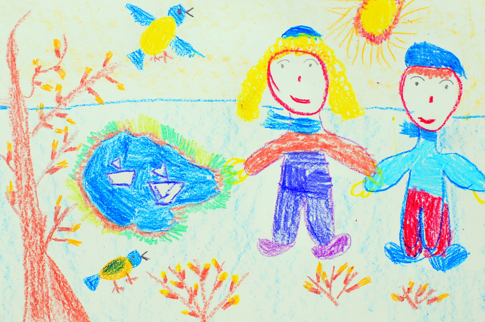
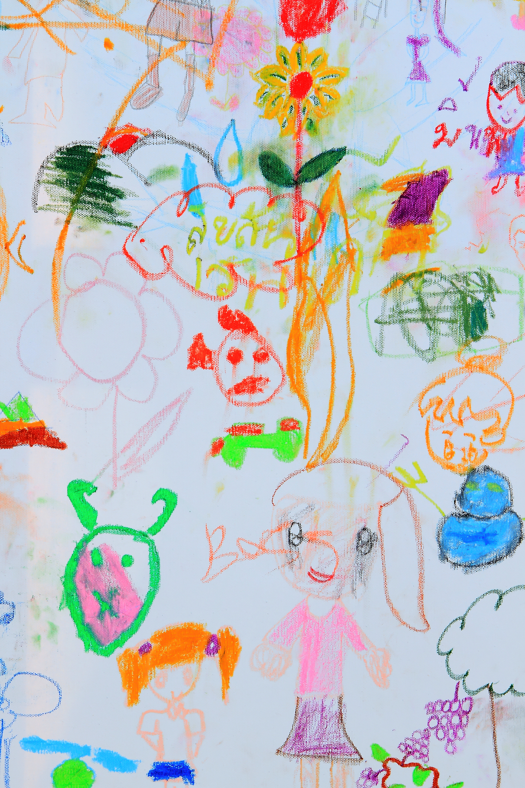
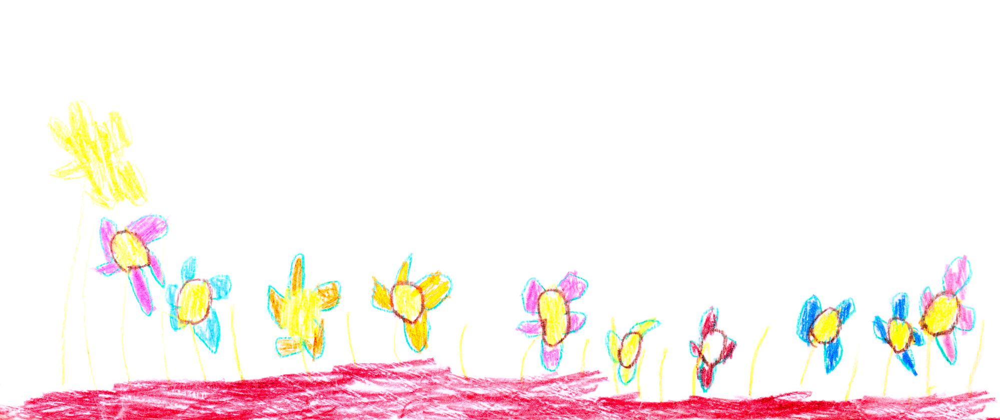
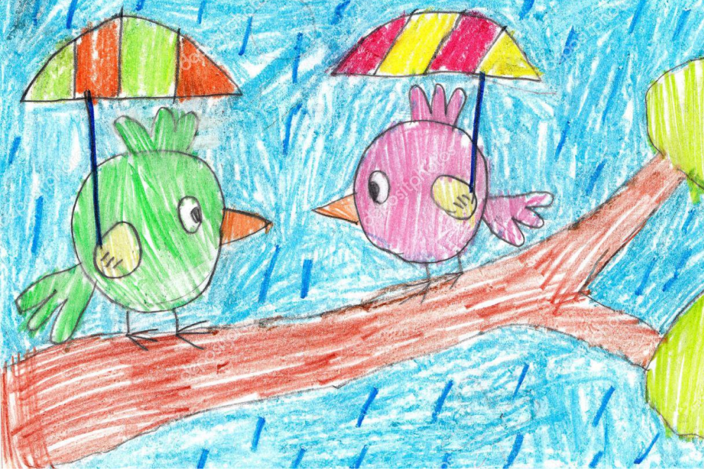
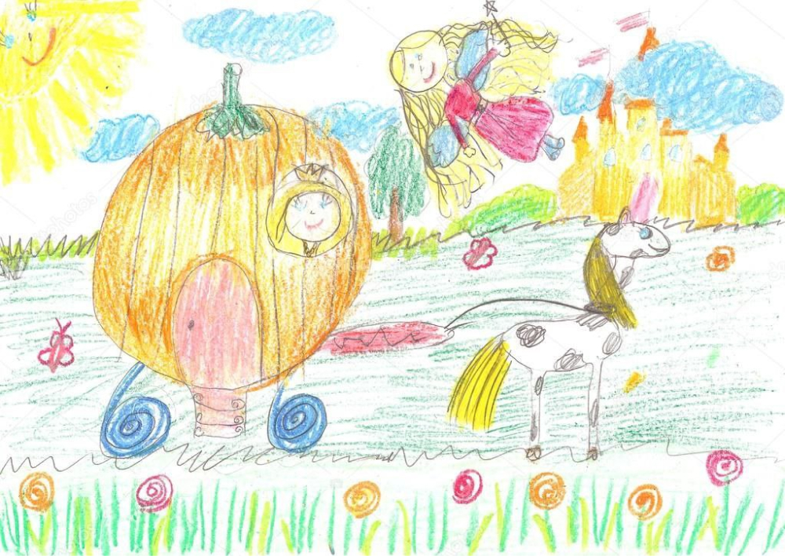

Мой ребенок плохо говорит. Что делать?
Какие могут быть проблемы с речью у ребенка
Самая теплая картинка из детства, пожалуй, выглядит так: розовощекий малыш смешно и оживленно что-то рассказывает папе и маме, выбирая забавные слова. Все так: родители с трепетом ждут момента, когда с ребенком можно будет разговаривать на одном языке. Речь — это едва ли не главный инструмент для коммуникации с миром. Определяющим для формирования речи является период от первого года жизни до 3-5 лет. Скажи, что у тебя болит, что ты хочешь на обед, как прошел день в садике, какой комбинезон купим в магазине? Согласитесь, гораздо легче получить ответы на эти вопросы напрямую от малыша, словами, а не разгадывая их по мимике или крику. Но что делать, если ваш ребенок молчит или плохо разговаривает — не выговаривает звуки, смешивает или искажает их, пропускает или переставляет слоги, его речь малопонятна для окружающих? Стоит ли ждать того самого возрастного «прорыва» или лучше брать ситуацию в свои руки и бежать к врачам? Надо ли ориентироваться на болтающих сверстников или всему свое время? Детально и подробно разбираемся в речевом развитии детей вместе со специалистами Центра развития речи «СМ-Клиника».
Каковы основные причины задержки речевого развития (ЗРР)? Какие типы нарушений выделяют?
Чтобы корректно ответить на эти вопросы, необходимо сразу же разобраться с терминологией. Под задержкой речевого развития понимают более позднее овладение навыками устной речи. То есть дети с задержкой речевого развития — это дети с сохранным интеллектом, слухом, пониманием речи, эмоционально отзывчивые, с выработанными артикуляционными навыками, но развитие речи которых не укладывается в общепринятые возрастные нормативы. Мы будем вести речь про детей с такими нарушениями.
Причины задержки речевого развития (специалисты сокращают термин до аббревиатуры ЗРР) делятся на 2 типа: органические и функциональные (социальные).
К органическим причинам можно отнести:
- — перинатальное поражение центральной нервной системы. Как правило, в анамнезе у
таких детей встречается гипоксия, внутриутробные инфекции, родовые травмы,
недоношенность; - — нарушение слуха (тугоухость). Ребенок просто не слышит звуков и не реагирует на них;
- — инфекционные заболевания в раннем возрасте;
- — наследственный фактор.
Социальные причины проблем с речью таковы:
- — отсутствие потребности в речи. Гиперопека, когда родители исполняют самые незначительные прихоти ребенка по щелчку пальца, ведет к тому, что у малыша не возникает потребности говорить.
Помните известный анекдот?
У родителей сын семь лет не разговаривал. Они и свыклись с
мыслью, что ребенок родился немым.
И вот сидят они, обедают. Вдруг сын ни с того ни с сего:
— Суп пересолен.
Родители, пораженные:
— Сынок, ты разговариваешь?! А раньше-то чего молчал?
— А раньше нормально было.
Шутка шуткой, но основана она на вполне реальной ситуации. Развитие речи нуждается в мотивации, иначе действительно — какой смысл говорить, если тебя и так понимают?
- — педагогическая запущенность — ребенком не занимаются, не стимулируют его развитие, не дают образовательной базы;
- — неблагоприятная обстановка в семье. Дети крайне чувствительны к ссорам, конфликтам, пьянству или другим родительским отклонениям. Все это влияет на речь
- — психологическая травма может стать мощным тормозом для речевого развития;
- — билингвизм. Развитие речи ребенка, с рождения слышащего и понимающего несколько языков, на которых говорят в семье, идет иначе, чем у одноязычных сверстников. Зачастую процесс несколько медленнее стандартных возрастных норм.
Когда родителям пора волноваться? Как отличить индивидуальный ритм развития малыша от потенциально серьезных проблем с речью? В каком детском возрасте уже можно говорить об отклонениях и корректировать их?
Диагностика нарушений развития речи предполагает проведение консультаций у целого ряда специалистов: логопеда, педиатра, невролога, оториноларинголога и детского психолога. Это всегда комплексная задача, которую нужно решать не точечно, а нескольким специалистам сообща. Отметим, что до двух лет диагноз «задержка речевого развития» не ставится, так как речь может появиться спонтанно. Тот самый «прорыв», о котором вы наверняка слышали, когда молчащий ребенок, словно по свистку, начинает болтать без умолку. С 2 до 3 лет ребенку могут установить «темповую задержку», в таком случае ему необходимо начать заниматься с логопедом. Если в три года поставлен диагноз «задержка речевого развития», то ребенку обязательно необходима комплексная медико-педагогическая реабилитация.
Если ребенку нет трех лет, он здоров, активен, развивается по нормам, хорошо понимает обращенную речь, выполняет просьбы, что-то говорит, у него есть «свой язык», он пытается общаться с вами и окружающими, то сильно волноваться не стоит. Вполне возможно, что ребенок просто медленнее зреет, чем его сверстники.
Когда же бить тревогу? Какие сигнальные флажки нужно заметить?
Для начала не накручивайте себя и не придумывайте ужасы. Обретя спокойствие, вспомните, как развивался ребенок в свой первый год. Реагировал ли на ваш голос, гулил ли, был ли у него младенческий лепет? Это этапы речевого развития, которые должен пройти каждый ребенок, прежде чем произнести первые детские слова. Если их не было или что-то пропущено, это повод обратиться к врачу, проверить слух и зрение.
Затем надо обратить внимание на моторное развитие. Возможно, малыш неуклюж, ходит на цыпочках, часто падает или его конечности плохо скоординированы — «руки сами по себе, ноги сами по себе». Речевые мышцы — такие же мышцы, и, возможно, ребенку трудно согласовывать не только работу ног и рук, но и губ, щек и языка. Это может определить невролог.
Переходим к поведению и взгляду. Родителям стоит волноваться, если ребенок нелюдим, не смотрит в глаза и вообще как бы не замечает вас. Он вполне себе «самостоятелен», и создается впечатление, что вы ему и не нужны вовсе. Это не склад характера, не интроверсия — это звоночек о серьезных проблемах в развитии! Если ваше чадо ведет себя так, надо идти на прием к специалистам, которые заметят сложности, и, если опасения не беспочвенны, помогут справиться с проблемами. Чем раньше родители и врачи их заметят, тем проще будет лечение и легче последствия. Таким образом, важно своевременно выявить задержку и начать развивать речь. Оптимальный возраст для педагогического и медицинского воздействия — три года.
Как происходит коррекция проблем?
Как правило, это совместная работа логопеда и невролога. Если задержка речевого развития обусловлена психологическими факторами, то к работе подключается детский психолог. Вместе они определят ключевую причину, которая повлекла задержку развития речи, и от нее уже будут исходить в способах решения проблемы. Специалисты самыми современными методами будут стимулировать речевое развитие, обогащать словарный запас. Логопед проведет специальные уроки по запуску и развитию речи, поможет ребенку правильно строить предложения, исправит постановку звуков, займется артикуляционной гимнастикой, пальчиковыми и подвижными играми.
Если возникнет необходимость, маленькому пациенту назначат медикаментозную или физиотерапию — это компетенция невролога.
Заикание — одна из самых частых речевых проблем. Что делать маме и папе, если они столкнулись с такой особенностью ребенка? Почему у кого-то заикание проходит без следа, а у кого-то остается? Зависит ли это от своевременного обращения к врачу — чем раньше, тем лучше?
Логоневроз, или по-другому заикание, — нарушение темпо-ритмической стороны речи. Это достаточно распространенное речевое нарушение, которое в 80% случаев возникает в детском возрасте. Заболевание чаще развивается в период от 2 до 6 лет, затрагивая около 3% малышей в мире. Мальчики страдают от заикания в 4 раза чаще девочек.
Причины заикания:
- — наследственная предрасположенность;
- — внутриутробное поражение ЦНС;
- — длительные и хронические заболевания, инфекции;
- — черепно-мозговые травмы;
- — психологические травмы.
Выделяют три формы заикания у детей: невротическую (логоневроз), неврозоподобную и органическую. Невротическое заикание является функциональным расстройством; неврозоподобное заикание чаще связано с общим недоразвитием речи; органическое является следствием поражениемя мозга в различные периоды жизни.
Заикание возникает из-за судорог в мышцах речевого аппарата. По выраженности речевых судорог различают легкую, среднюю и тяжелую степень заикания у детей. Степень тяжести может быть непостоянной у одного и того же ребенка в различных ситуациях:
- Легкая степень заикания характеризуется судорожными запинками только в спонтанной речи; симптомы едва заметны и не препятствуют речевому общению;
- При средней степени тяжести запинки возникают в монологической и диалогической речи;
- При тяжелом заикании у детей речевые судороги частотны и длительны; запинки случаются во всех видах речи, включая сопряженную и отраженную; появляются сопутствующие движения. В самых крайних случаях из-за заикания речь и коммуникация становятся практически невозможными.
В зависимости от характера течения выделяют следующие варианты заикания у детей: волнообразный (заикание усиливается и ослабевает в различных ситуациях, но не исчезает), постоянный (заикание имеет относительно стабильное течение) и рецидивирующий (заикание возникает вновь после периода речевого благополучия).
К кому обращаться, если ребенок заикается?
Обследование проводится логопедом, педиатром, неврологом, детским психологом и детским психиатром. Для специалистов важную роль играет изучение анамнеза — что стало спусковым крючком проблемы, наследственной отягощенности и сведений о раннем психоречевом и моторном развитии ребенка, выяснение обстоятельств и времени возникновения заикания.
Для выявления органических поражений ЦНС неврологом назначается ЭЭГ, ЭхоЭГ, МРТ головного мозга. В процессе обследования у детей с заиканием определяется локализация, форма, частота речевых судорог; оцениваются особенности темпа речи, дыхания, голоса; выявляются сопутствующие двигательные и речевые нарушения, логофобия; выясняется отношение ребенка к своему дефекту. У заикающихся в обязательном порядке проводится обследование всех компонентов речевой системы.
При своевременном обращении к специалистам прогноз по коррекции заикания — благоприятный, и у большинства детей заикание исчезает.
Гаджеты влияют на развитие речи? Ускоряют или тормозят его? Как дома стимулировать речевые навыки, чтобы и детям нравилось, и имело эффект?
Будет неправильно делать вид, что в наше время можно прожить без гаджетов. Они окружают нас, становятся все умнее, упрощают быт, помогают сэкономить время. Нет, совершенно невозможно пройти мимо и отгородить детей от прогресса железной стеной. Но на то мы и взрослые, чтобы понимать, какое влияние могут оказывать технологии на малышей, и как минимум контролировать количество времени и качество контента.
Конечно, накормить супом или прекратить истерику проще простого, сунув в руки магический смартфон с мультфильмами. Но такое времяпрепровождение моментально вызывает привыкание. Истерики в итоге усилятся, а развитие затормозится, потому что быстрая смена картинок не требует фантазии и креативности.
Мама свободна, ребенок занят делом, но делом сомнительным. По данным ЮНЕСКО, 93% современных детей смотрят гаджеты 28 часов в неделю, то есть около 4 часов в день. Это колоссальная нагрузка для неокрепшей нервной системы. А ведь возраст до трех лет — основа, во время которой закладывается развитие ребенка, в том числе и речевое. В этот период ему как никогда необходимо активное общение с окружающими, а его заменяет бездушный экран. Упустили важный период — приобрели отставание в развитии речи, трудности в чтении и восприятии информации на слух и даже расстройства аутистического спектра.
Родители устают, однако стоит искать компромисс — найти то совместное занятие, которое не изматывает вас и в то же время нравится ребенку. Ну а если смартфона не избежать, давайте его хотя бы дозировать, чтобы избежать детской экранозависимости.
Представим ситуацию: родители не разглядели вовремя речевые проблемы ребенка, не обратились за помощью. Чем это чревато? Какие последствия влечет за собой отставание в речевом развитии?
Речь — одна из важных высших психических функций. Это наш главный инструмент для коммуникации и связи с миром. От уровня развития речи зависит ментальное здоровье, психологическая уверенность в себе и даже социальный статус: богатый лексикон, умение связно говорить, лапидарно выражать свои мысли всегда ценились в обществе. Формирование речи начинается с первых дней жизни, и если не обращать на эту сферу внимания, махнуть на нее рукой, то можно упустить главное — тот момент, когда у ребенка начались речевые нарушения. А они в свою очередь тянут за проблемы в общении со сверстниками, сложности в обучении в школе, неразвитость творческого мышления и воображения. Проблемы нанизываются друг на друга, как снежный ком, и в итоге мы зачастую наблюдаем неуспеваемость, сложности с поступлением в вуз и, безусловно, проблемы с общением. Поэтому так важно, чтобы родители наблюдали за ребенком и могли вовремя заметить тревожные сигналы.
Любовь к ребенку и фокус на его развитие помогут родителям быстро распознать неладное и обратиться за помощью к профессионалам , в арсенале которых сегодня суперсовременные методики, помогающие быстрее достичь необходимого результата.
Как решить проблемы с речью
Речевые нарушения у детей встречаются в наши дни все чаще: по официальной статистике, 58% ребят имеют речевые патологии. Такие проблемы обязательно должны решаться комплексно, ведь только системная работа специалистов высокого уровня приведет к успеху. Знания, методики, новые технологии из разных смежных сфер тесно сплетаются ради того, чтобы ребенок говорил связно, логично, без нарушений.
Как сегодня корректируют речевые нарушения? На каких принципах основаны современные методы лечения?
Под речевыми нарушениями специалисты понимают различные отклонения от нормы речевого развития. Безусловно, легче всего коррекции речевых нарушений поддаются дети дошкольного возраста, поэтому мы советуем родителям внимательно прислушиваться к детской речи. Если вам кажется, что речь дается ребенку с трудом, он плохо повторяет звуки, заикается, придумывает непонятный язык или вовсе молчит, следует обратиться за помощью специалистам. Многие проблемы невозможно разрешить в домашних условиях, в то время как опытный врач, логопед сможет установить причину патологии и предложит варианты, как от нее избавиться. Помните, волшебной таблетки не существует! Связная речь — это непростая комплексная работа, но ее итогом будете довольны и вы, и ваш ребенок.
Методов коррекции существует великое множество. Так, логопед выбирает подходящие варианты в зависимости от индивидуальных особенностей каждого юного пациента. Его работа строится на нескольких принципах, которые позволяют всесторонне увидеть проблему и, соответственно, быстро и грамотно ее решить. Специалистом учитываются возраст ребенка, структуру дефекта, причины, которые к нему привели, поэтапность процесса. Вот почему персонализация так важна: личные особенности, умноженные на современные методы, дают отличный результат.

Если углубляться в логопедические занятия, то во время их проведения используются наглядные, словесные и практические методы. Например, для постановки звука чаще всего применяют наглядные и практические методы, а для автоматизации (закрепления) — словесные.
К практическим методам относятся упражнения, игры и моделирование. В число наглядных методов входят наблюдение, рассматривание картинок, рисунков. Основными словесными методами являются рассказ, беседа, чтение. Вы, наверное, помните, как в детстве родители расспрашивали вас об увиденном фильме или прочитанной книге? И внезапно оказывалось, что рассказать все, что хочется, сложно — мысли путаются, слова улетают, картинки в голове вытесняют одна другую. А если в речевой деятельности ребенка есть нарушения, то связный монолог и вовсе превращается в испытание. Логопед поможет ребенку преодолеть и психологические, и речевые барьеры.
Но логопед не единственный специалист, который помогает детям на пути к чистой речи. Зачастую в связке с логопедом работает невролог. В его компетенции назначение таких важных обследований, как ЭЭГ, ЭхоЭГ, МРТ. Также невролог вправе назначить лекарственную терапию и отправить на консультацию к физиотерапевту.
В коррекции заикания успешно проявил себя «ЛогоБОС» — логокоррекционный комплекс биологической обратной связи. С его помощью формируется правильное дыхание, артикуляция, оттачивается темп, ритм речи, появляется уверенность в общении, а это так важно для каждого ребенка
Какие специалисты работают в центре? Кто и чем может помочь ребенку? Помогаете ли вы взрослым пациентам?
В центре работает прекрасная команда высококвалифицированных профессионалов разного профиля, в которую входят неврологи, логопеды, дефектологи, медицинские психологи, нейропсихологи, физиотерапевты, врач ЛФК, остеопат. Обратите внимание, мы готовы помогать не только детям с двух лет, но и взрослым с такими нарушениями, как:
- — задержка речевого развития;
- — задержка психического развития;
- — алалия;
- — дизартрия;
- — заикание;
- — общее недоразвитие речи;
- — дисграфия и дислексия;
- — синдром дефицита внимания и гиперактивности;
- — расстройство аутистического спектра;
- — фонетико-фонематическое недоразвитие речи;
- — фонетическое нарушение речи.
Мнение о том, что во взрослом возрасте коррекция нарушений речи не дает результатов — устаревший миф, который пора забыть раз и навсегда. Наука и медицина не стоят на месте. Раньше действительно помочь взрослым было сложно, но современное оборудование и новые методы комплексно помогают решить очень многие, казалось бы, нерешаемые вопросы. Обращение за помощью в Центр развития речи — залог профессиональной помощи и поддержки.
Какие занятия по коррекции речи предлагаются в центре?
Центр готов предложить вам несколько вариантов работы:
- — индивидуальные занятия с логопедом, дефектологом, нейропсихологом и медицинским психологом;
- — комплексные программы по коррекции речевых и поведенческих нарушений.
Индивидуальные занятия с логопедом — важнейшая часть работы. Подробно остановимся на том, как они проходят, потому что у многих родителей возникает вопрос, что будут делать с моим ребенком. Знакомство начинается с диагностики, на которой специалист выявит существующие нарушения.
Все больше и больше детей имеют те или иные отклонения в речевом развитии. Даже если ребенок рано заговорил и довольно четко произносит звуки, то встречаются и иные трудности: дислексия, дисграфия, неумение строить предложения, трудности пересказа, недостаточный словарный запас, аграмматизмы. Специалисты центры укажут на нарушения и, главное, посоветуют, в каком направлении двигаться дальше — к кому обратиться за индивидуальной помощью, как заниматься с ребенком дома. Правильный вектор и понимание ситуации помогают родителям яснее представлять, что происходит с их ребенком.
Мы настоятельно рекомендуем обращаться за помощью в центр, если вашему ребенку исполнилось два года, а он не говорит. Иначе вы рискуете упустить момент, когда нарушения можно исправить легко и быстро.
Если в четыре года ребенок говорит плохо, не произносит четко звуки — это тоже повод для визита к специалисту. Логопед определит особенности дефекта, даст советы, как в дальнейшем будет строиться работа.
Индивидуальные занятия с психологом проходят примерно по такому же плану, однако медицинский психолог диагностирует особенности по своему профилю. Он работает с нарушением высших психических функций — памяти, внимания, мышления. Занятия с психологом не просто рекомендуются, а необходимы детям при интеллектуальных нарушениях, особенностях эмоционально-волевой сферы, СДВГ, негативизме, расстройствах аутистического спектра, заикании.
Индивидуальные занятия проводятся и с нейропсихологом, который определяет как работает мозг ребенка, как организованы психические процессы, помогает выявить особенности развития ребенка и причины возможных трудностей в поведении и учебе.
В чем отличие психолога от смежного с ним специалиста — нейропсихолога? Этот вопрос возникает у многих. Психолог изучает эмоционально-волевую сферу и эмоционально-личностные проблемы, а нейропсихолог — мозговую анатомию и физиологию.
Еще один специалист, оказывающий индивидуальную помощь — дефектолог-коррекционный педагог. Его основная задача — обучение и воспитание детей с ограниченными возможностями здоровья. Он, как вторая мама, помогает детям адаптироваться в мире, прививает им бытовые и социальные навыки, без которых жизнь в социуме невозможна.
Какой график работы центра? Где и как можно записаться?
Записаться к специалистам можно через сайт, по телефону + 7 (495) 777-48-49 и при личном посещении нашего центра. Недавно появилась возможность записи к специалистам при помощи Яндекс станции «Алиса». Центр работает с 09.00 до 21.00 в будние дни и выходные. Приходите — вас ждет всесторонняя профессиональная помощь и поддержка!
Развитие речи — процесс долгий, однако его плоды настолько ощутимы и важны, что этот путь стоит приложенных трудов. Наблюдайте за вашими детьми, проявляйте интерес к их «болтологии», и не тяните, если необходима помощь специалистов. Результат совместной работы не заставит себя ждать.